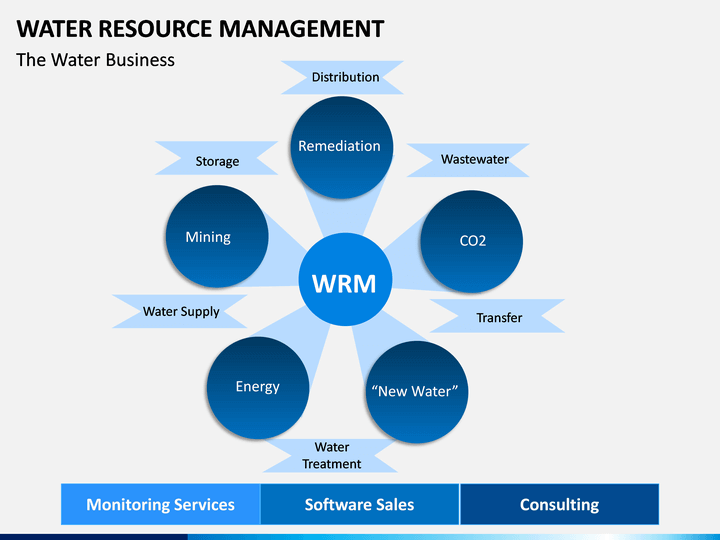

Understanding Ethiopian Drought and Disasters
Ethiopia, a land of diverse landscapes, faces recurring drought and disaster challenges. These events have profound effects on its people and environment, demanding innovative solutions for mitigation.

Drought in Ethiopia
Mitigation Solutions
Ethiopia is implementing various solutions to combat these challenges, including:
- Improved Water Management: Efficient water management practices and infrastructure can conserve and distribute water resources effectively.
- Diversified Agriculture: Promoting crop diversification and sustainable farming practices makes the agricultural sector more resilient to drought.
- Early Warning Systems: Developing and enhancing early warning systems for disaster preparedness can save lives and resources.
- Community Resilience: Building the resilience of communities through education, training, and resource access is crucial for disaster mitigation.
Effects of Drought and Disasters
Droughts and disasters in Ethiopia have several devastating effects, including:
- Food Insecurity: Droughts can lead to crop failures, causing food shortages and malnutrition.
- Water Scarcity: Reduced rainfall can lead to water scarcity, affecting both drinking water and agriculture.
- Environmental Degradation: Natural disasters can lead to soil erosion, deforestation, and habitat destruction.
- Humanitarian Crisis: Disasters displace communities, creating a humanitarian crisis with people in need of shelter and aid.
- Environmental Degradation: Natural disasters can lead to soil erosion, deforestation, and habitat destruction.

Ahmed Abdurahaman, from Jeldēsa village in the Somali region, lost half his herd of goats to drought.

Image 2: Flood Disaster
Software Solutions
Ethiopia can implement various software solutions to combat these challenges, including:
-
Early Warning Systems (EWS): Implementing advanced meteorological and climatic data analysis software can help in the development of effective early warning systems. These systems can predict weather patterns and potential disasters, allowing authorities to take preventive measures and inform the public in advance.

-
Geographic Information Systems (GIS): GIS software can be used to map and analyze vulnerable regions. It helps in identifying areas prone to drought and disasters, enabling more targeted relief efforts and resource allocation.
-
Remote Sensing Technology: Satellite imagery and remote sensing software can provide real-time data on soil moisture, temperature, and vegetation health. This data is crucial for monitoring drought conditions and can be used for early intervention.
-
Climate Modeling Software: Climate modeling tools can simulate various climate scenarios and their impacts on Ethiopia. These models help in understanding long-term climate trends and can inform policy decisions related to climate change mitigation and adaptation.
-
Disaster Management and Response Software: Specialized software can be used for disaster management and response. This includes coordinating resources, tracking affected areas, and managing relief efforts efficiently.
-
 Agricultural Decision Support Systems (ADSS): Software that provides farmers with real-time information about weather conditions, best planting times, and crop management techniques can significantly improve agricultural resilience in the face of drought.
Agricultural Decision Support Systems (ADSS): Software that provides farmers with real-time information about weather conditions, best planting times, and crop management techniques can significantly improve agricultural resilience in the face of drought. -
Water Resource Management Software: Advanced software for managing and optimizing water resources can help ensure efficient water distribution and usage, especially during drought periods.